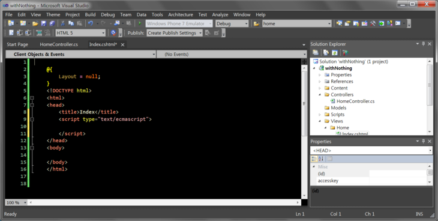
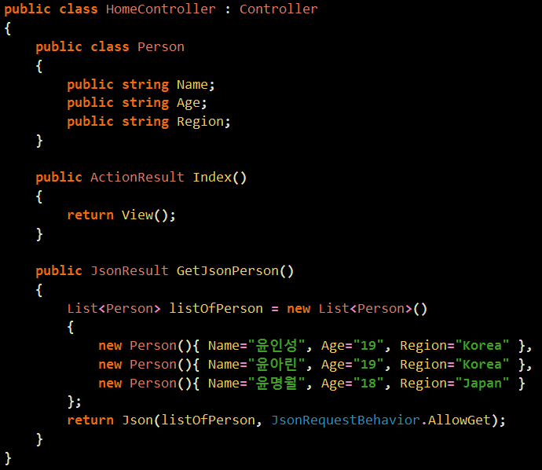
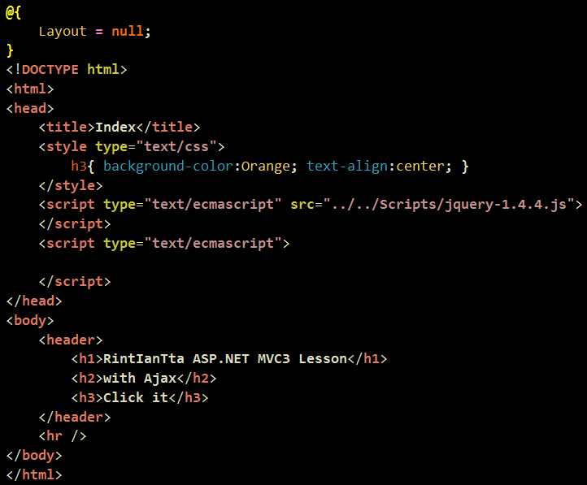
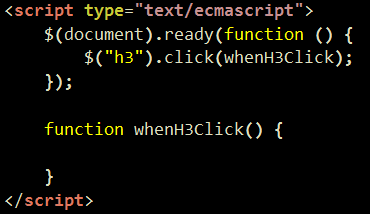
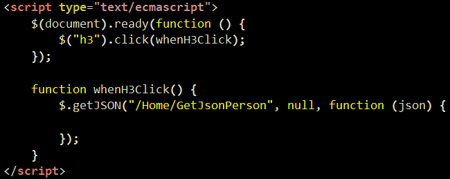
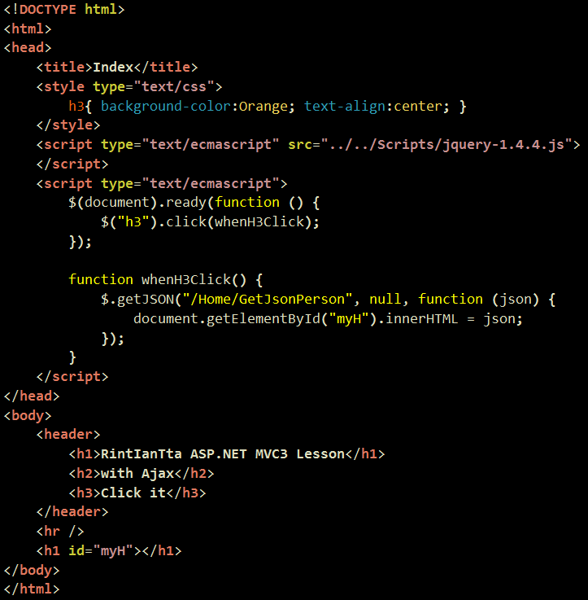
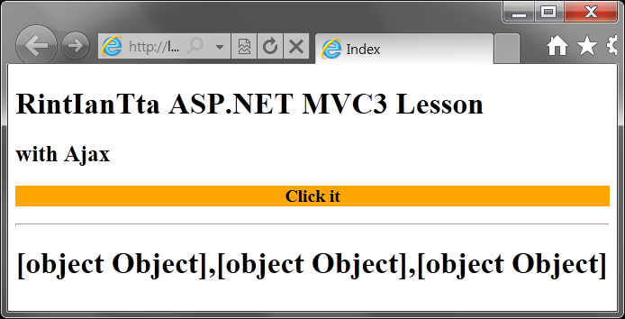
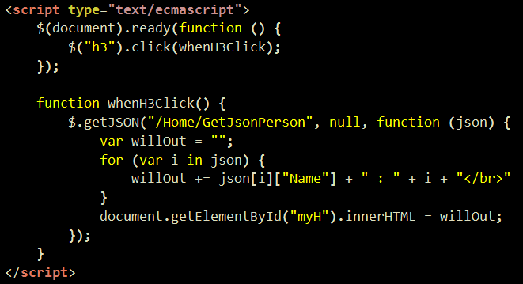
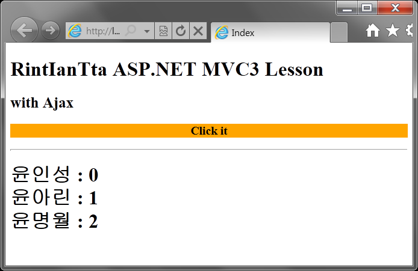

With JSON(2)
지난 시간에 현재 강의는 Ajax라고 보셔도 된다고 했습니다.
Ajax란 페이지를 넘기지 않고 페이지의 내용을 필요한 내용으로 바꾸는 기술이라고 간단하게 생각하시면 된답니다.
지금까지 배웠던 녀석들은 모두 액션간의 이동을 해야했죠.
내용을 바꾸기 위해서는 파라메터를 바꾸거나 포스트를 사용했습니다.
아래의 오늘의 결과는 그렇지 않습니다.
그냥 『Click it』 을 누르면 바뀌어버립니다.

이제 다시 메인을 살펴보도록하죠
이 데이터를 어떻게 뿌려줄 수 있을까요 .. ?
일단 Index() 액션의 View를 만들어줍니다. ㅎㅎ

그리고 상콤하게 jQuery를 추가해주도록 합시다.
저 소스경로 치시는거 아니에요
선택해주는겁니다. 하시다보면 아실거에요 ㅎㅎ
쨌거나 이 부분은 jQuery구요.
jQuery강의를 보셔도 재미있으실겁니다. ㅎㅎ

이제 클릭 이벤트리스너를 만들어주구요.
참고적으로 jQuery강의 모르시면 ASP.NET MVC3 Part1 이 종료된 후
ASP.NET MVC3 With Ajax 진행이 안됩니다. 이 블로그의 강의 경로를 따라가시려면
ASP.NET MVC3 강의와 JQuery 강의를 같이 들으셔야됩니다. ㅎㅎ

getJSON이라는 녀석을 써주었습니다.
그냥 함께 따라가 보기로만 하죠
이해가 안 되셔도 됩니다.
이런 것도 있구나를 간단히 보는 것이니까요.
(왜냐면 아직 getJSON 강의가 안 올라가 있습니다.)

그리고 innerHTML을 가져온 json으로 바꿉니다.

이제 누르시면 3개의 Object가 뜰 것이랍니다.
"아니 왜 3개죠 .. ?"
『우리가 JSONResult로 넘긴 것이 3개잖아요 .. !』

다음과 같이 내용을 가져옵니다.

이제 다음과 같은 실행결과를 보실 수 있구요.

일단 오늘 강의에 갑자기 Ajax가 튀어나왔는데요.
JQuery 강의를 병행하셨으면 이부분을 일단 그냥 보시기 바랍니다.
다음 강의에서 현재 Ajax 1강이 올라가 있는데요. 그부분과 참고해서 설명을 드리겠습니다.
JQuery강의를 안 보셨으면 보셔야합니다.
이 블로그 강의 루트입니다. ㅎㅎ
그리고 제 생각에는 MVC라는 녀석에게 무조건 필요한 녀석이라고 생각합니다. ㅎㅎ
질문 : $.getJSON("/Home/GetJsonPerson", null, function (json)
이부분에서 Home Controllers의 GetJsonPerson이라는 Action으로 인자를 던질 수 있는 방법은 없나요?
예를들어 19라고 나이를 던지면 19인 애들만 리스트에서 가져오고 싶어서요.
답 : $.getJson() 메서드의 두 번째 매개 변수로 데이터를 가지고 있는 객체를 넣으시면 됩니다.
밥상을 차려줘도 나는 못먹네.. -_-